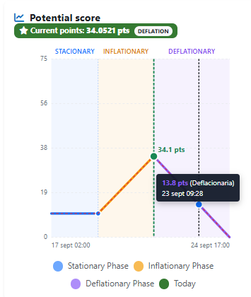

The teacher defines the challenge window, scoring and rubrics for answers and student-authored challenges.
QUESTOURnament basis · Advanced reading
Teaching evidence for the QUESTOURnament methodology
Its pedagogical rationale, the studies cited by the original project, and the limits of what those studies establish.
Competition, collaboration and social recognition
The original project's “QUESTOURnament basis” describes these three mechanisms as sources of motivation. Learners work individually or in teams on time-limited intellectual challenges. They may also propose challenges for their peers, turning question design and evaluation into learning activities.
The intended role of competition is not simply to reward speed: the teacher sets assessment criteria, student authors evaluate answers to their challenges, and the teacher oversees the process and resolves disputes. Variable scoring and a ranking make participation visible. These are features of the instructional design, not by themselves proof of an educational effect.

From authorship to feedback
Students may write challenges; the teacher reviews them before publication.
Participants submit responses. Student authors assess peers' answers against the published criteria, with teacher supervision.
Feedback, scores and recognition provide material for discussion and course improvement.
What the research actually examined
Competitive e-learning in higher education
Regueras and colleagues examined academic performance and student experience with QUEST, an earlier competitive e-learning tool, in a higher-education case study. It provides context for the later methodology, but it is not a direct evaluation of today's Questournament plugin.
Read the citation →Communication Networks
This paper describes a learning strategy combining competitive QUESTOURnament activities and collaboration in a Communication Networks course. The reference on the original site lists 2010; the journal publication is from 2011.
Read the citation →Individual competition in Immunology
In a quasi-experimental study of 285 medical students, the intervention group showed greater improvement and academic outcomes and reported satisfaction with the competitive tool. Assignment was not random, and the groups were not fully homogeneous, limiting causal conclusions.
Read the citation →Evidence informs design; it does not certify every feature
The studies concern particular courses, cohorts and versions of the method. They do not separately validate later additions such as multi-question challenges, Moodle question-bank composition or automatic grading. Results should not be treated as a guarantee for another discipline or cohort.
For a new course, publish the rubrics in advance, balance competition with cooperation, supervise peer assessment and monitor both learning outcomes and student experience. These are practical implications of the method, not independent findings established by the three studies.
Academic references
- Regueras, L. M., Verdú, E., Verdú, M. J., & de Castro, J. P. (2011). “Design of a Competitive and Collaborative Learning Strategy in a Communication Networks Course.” IEEE Transactions on Education, 54(2), 302–307. https://doi.org/10.1109/TE.2010.2053933.
- Regueras, L. M., Verdú, E., Muñoz, M. F., Pérez, M. A., de Castro, J. P., & Verdú, M. J. (2009). “Effects of Competitive E-Learning Tools on Higher Education Students: A Case Study.” IEEE Transactions on Education, 52(2), 279–285. https://doi.org/10.1109/TE.2008.928198. University repository.
- Corell, A., Regueras, L. M., Verdú, E., Verdú, M. J., & de Castro, J. P. (2018). “Effects of Competitive Learning Tools on Medical Students: A Case Study.” PLOS ONE, 13(3), e0194096. https://doi.org/10.1371/journal.pone.0194096. Open-access article.
The original website is the source for the methodology description and its list of references.